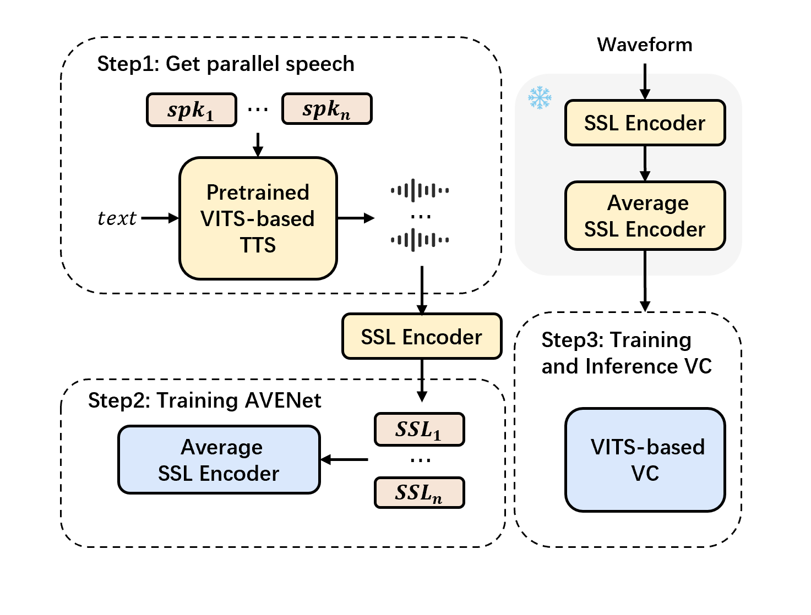

Recently, feature disentangling in voice conversion has shown great promise. Achieving a balance between preserving content information and effectively separating timbre remains challenging. This paper introduces an innovative method for disentangling features from self-supervised learning (SSL) representations.
We propose an average feature calculated by averaging SSL features from frame-level aligned parallel corpus. This feature ideally represents only content information due to its unique computation process. To approximately enable use of ideal features, we designed AVENet���an architecture that takes raw SSL features as input and outputs closely matching average SSL features. To train AVENet, we devised a technique that involves freezing the duration predictor in a TTS system and manipulating speaker embeddings. This process generates frame-aligned parallel data similar to human speech.
Experiments conducted on the performance of AVENet-extracted features within a VC system demonstrate their superiority over multiple current SSL feature disentangling methods, affirming the effectiveness of our proposed disentanglement approach.

2. Demos -- TTS Parallel speech
Speaker 1
Speaker 2
Speaker 3
Speaker 4
Speaker 5
Speaker 6
3. Disentangle effectiveness of AVENet
We visualized two types of features on the graph. We selected 30 frames of WavLM features, AVENet output features, and the average WavLM feature for each frame from 5 source speakers. We used t-SNE to project both WavLM features and AVENet output features into 2D. Figure illustrates the projection of features. The black dots represent average WavLM features, while each color represents a different speaker. After using AVENet, features from the same frame but from different speakers are distributed more closely in the graph and are also closer to the average WavLM feature.